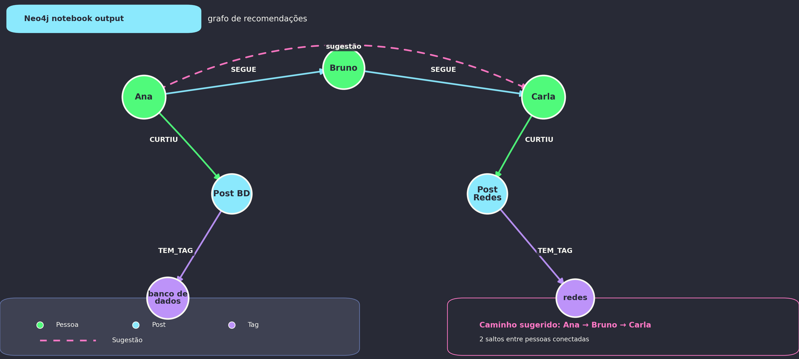

Revisão: Aula Passada
- Redis mostrou NoSQL como estruturas rápidas em memória
- MongoDB mostrou documentos como modelo principal
- Hoje: NoSQL quando as relações são o centro do problema


Fase 1: De onde vêm as recomendações?
Instagram, TikTok, YouTube, Spotify e jogos não olham só para registros isolados.
Ideia central: muitas perguntas importantes são sobre conexões entre pessoas, conteúdos, temas, produtos e ações.
Uma pergunta simples
fato 1 Ana segue Bruno
fato 2 Bruno segue Carla
fato 3 Ana ainda não segue Carla
O aplicativo deveria sugerir Carla para Ana?
Limite de pensar só em tabelas
No modelo relacional isso funciona, mas perguntas sobre “amigos de amigos”, “caminhos” e “recomendações” tendem a virar muitas junções.
Em banco de grafos, a relação não é detalhe: ela é parte principal do modelo.
Fase 2: O que é um grafo?
| Conceito | No Neo4J | Exemplo |
|---|---|---|
| Nó | Entidade | (:Pessoa {nome: 'Ana'}) |
| Aresta | Relacionamento | [:SEGUE], [:CURTIU] |
| Propriedade | Dado dentro de nó ou relação | turma, tema, peso |
| Padrão | Caminho que queremos encontrar | (a)-[:SEGUE]->(b) |
Exemplos do dia a dia
Rede social
Pessoa → SEGUE → Pessoa
Pessoa → CURTIU → Post
Post → TEM_TAG → Tag
Streaming
Usuário → ASSISTIU → Vídeo
Vídeo → TEM_GÊNERO → Gênero
Usuário → CURTIU → Vídeo
Escola
Aluno → FEZ → Atividade
Aluno → TEM_DIFICULDADE_EM → Assunto
Assunto → PRE_REQUISITO_DE → Assunto
Onde Neo4J entra?
| Banco | Ideia principal | Bom para |
|---|---|---|
| PostgreSQL | Relações, SQL, consistência | cadastros, pedidos, regras transacionais |
| MongoDB | Documentos | registros flexíveis e aninhados |
| Redis | Chave-valor em memória | cache, sessões, filas, rankings |
| Neo4J | Grafos | relações, caminhos, recomendações |
| DuckDB | Colunar analítico | análise local e OLAP |
Neo4J não substitui PostgreSQL: ele ajuda quando a estrutura de relações é a parte mais importante da pergunta.
Fase 3: Instalação
Vamos usar o Neo4j Desktop como caminho padrão para subir um banco local.
Vamos usar o navegador em http://localhost:7474 e escrever consultas em Cypher.
Subir o Neo4j Desktop
- Baixe e instale o Neo4j Desktop no computador.
- Crie um novo Local DBMS.
- Defina a senha inicial como senhabdd2.
- Inicie o banco e abra o Neo4j Browser.
- Acesse http://localhost:7474 e autentique com o usuário neo4j.
Esse é o caminho padrão da aula: interface gráfica, banco local e acesso direto ao Browser.
Ubuntu Linux: instalação local
No Ubuntu, podemos usar o pacote oficial compactado, sem Docker.
Depois abra http://localhost:7474 e entre com usuário neo4j e senha senhabdd2.
Resetar o ambiente
- Feche o banco no Neo4j Desktop.
- Apague o Local DBMS criado para a aula.
- No Ubuntu, pare o serviço com bin/neo4j stop e apague a pasta ~/neo4j-bdd2.
- Se quiser recomeçar do zero, crie outro DBMS ou baixe novamente a pasta local.
Opções alternativas: Docker, Neo4j Aura Free ou Neo4j Sandbox.
Alternativa com Docker
Se você preferir containers, o mesmo exercício também funciona com Docker.
Fase 4: Primeiro grafo social
Vamos criar pessoas, posts, relações de seguir e relações de curtida.
Criar os dados
Ler o grafo
Pessoas
| p |
|---|
| (:Pessoa {nome: 'Ana', turma: '2INFO'}) |
| (:Pessoa {nome: 'Bruno', turma: '2INFO'}) |
| (:Pessoa {nome: 'Carla', turma: '2INFO'}) |
| (:Pessoa {nome: 'Diego', turma: '3INFO'}) |
| (:Pessoa {nome: 'Elisa', turma: '3INFO'}) |
Quem segue quem
| p.nome | outro.nome |
|---|---|
| Ana | Bruno |
| Ana | Diego |
| Bruno | Carla |
| Diego | Carla |
| Carla | Elisa |
O padrão (p)-[:SEGUE]->(outro) descreve o caminho que queremos encontrar.
Ana curtiu o quê?
| post.texto | post.tema |
|---|---|
| Aprendendo banco de dados grafos | banco de dados |
| Dicas de Python para iniciantes | programacao |
p é variável · Pessoa é label · nome é propriedade · CURTIU é relacionamento · -> é direção.
Fase 5: Sugestão de pessoas
Problema: sugerir pessoas que Ana talvez conheça.
Amigos de amigos
| sugestao |
|---|
| Carla |
A consulta procura alguém a dois passos de Ana e remove quem ela já segue.
Melhorar pela quantidade de conexões
| sugestao | conexoes_em_comum |
|---|---|
| Carla | 2 |
Este é o primeiro momento “recomendação”: a sugestão aparece porque existe um padrão de relações no grafo.
Fase 6: Recomendação de conteúdo
Agora a pergunta muda: quais posts Ana poderia gostar?
| Tipo | Lógica |
|---|---|
| Colaborativa | recomenda com base em pessoas com comportamento parecido |
| Baseada em conteúdo | recomenda com base nas propriedades dos itens |
Recomendação colaborativa
| post_recomendado | tema | usuarios_parecidos |
|---|---|---|
| Como estudar para prova de redes | redes | 2 |
O que essa consulta está dizendo?
Recomendação por tema
(nenhum resultado — nenhum post novo com temas que Ana já curtiu)
Aqui a recomendação não depende de usuários parecidos: depende do tema dos posts que Ana já curtiu.
Fase 7: Caminhos e graus de separação
Outra força de grafos é responder perguntas sobre caminhos.
Quantas conexões existem entre Ana e Elisa?
Menor caminho
Ana → Bruno → Carla → Elisa (3 saltos)
O * indica um caminho com quantidade variável de relações SEGUE.
Onde isso aparece?
- LinkedIn: conexões de 2º ou 3º grau
- Instagram/TikTok: rede de seguidores
- Jogos: amigos de amigos
- Segurança: caminho até contas suspeitas
- Escola: alunos, projetos, assuntos e habilidades
- Produtos: usuários, compras, categorias e avaliações
Fase 8: Atividade de modelagem
Em grupos, escolham um cenário e modelem um grafo.
Rede social escolar
Spotify, YouTube ou TikTok
Loja online
Sistema acadêmico
O grupo deve responder
Exemplo: sistema acadêmico
Nós: Aluno, Disciplina, Assunto
Relações: CURSA, ENSINA, TEM_DIFICULDADE_EM, PRE_REQUISITO_DE
Que assuntos Ana deveria revisar antes de estudar um novo assunto?
Fase 9: Quando usar Neo4J?
| Pergunta | Relacional | Grafo |
|---|---|---|
| Quais posts Ana curtiu? | junção simples | travessia simples |
| Quem são amigos de amigos? | self-join | caminho natural |
| Qual o menor caminho entre duas pessoas? | consulta recursiva | travessia de grafo |
| Como recomendar pessoas ou conteúdo? | muitas junções e regras | casamento de padrões |
| Listar usuários por cidade | muito bom | não é especial |
Neo4J não é “melhor que PostgreSQL”. Ele é melhor quando a relação é o centro do problema.
Privacidade e ética
Exercício Final
Objetivo: implementar um mini sistema de recomendação em Neo4J.